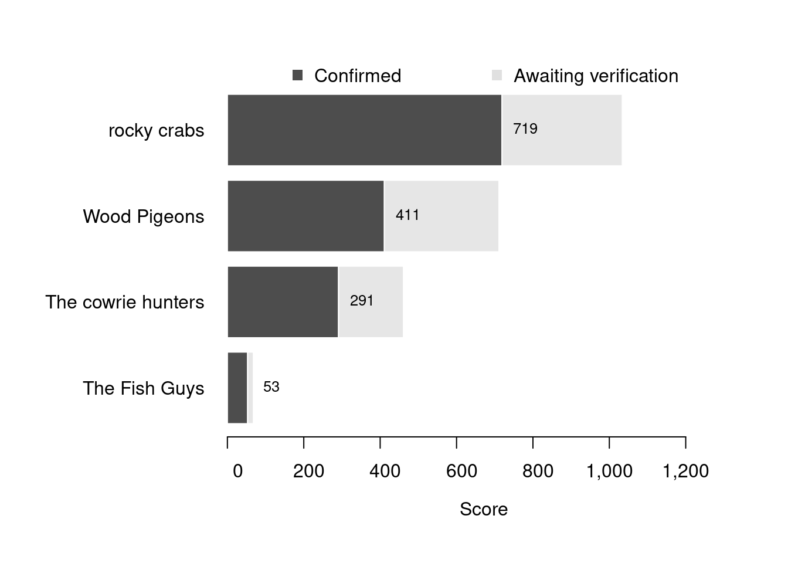

Content
You can view all the wildlife recorded at this event on iNaturalist.


| Records | 172 |
| Species | 81 |
| Verified species | 63 |
| Observers | 4 |
| Potential score | 1,677 |
| Confirmed score | 1,016 |
| Top verified species | Jania rubens |
| Top species rarity score | 46 |
| Registered participants | 14 |
| Children attending | 8 |
Congratulations to rocky crabs for taking the gold medal in this BioBlitz Battle! And well done to everyone for a great game and some fantastic wildlife finds.
| Team | Records | Potential Score | Confirmed Score |
|---|---|---|---|
| rocky crabs | 85 | 1034 | 719 |
| Wood Pigeons | 34 | 711 | 411 |
| The cowrie hunters | 46 | 461 | 291 |
| The Fish Guys | 7 | 68 | 53 |

| Participant | Records | Potential Score | Confirmed Score |
|---|---|---|---|
| milliemb | 85 | 1034 | 719 |
| emonaghan | 34 | 711 | 411 |
| Simon Hughes | 46 | 461 | 291 |
| Tom Rootsey | 7 | 68 | 53 |
A total of 8 species have a verified rarity score of 28 or higher.


Community verified records only
Click any image to view the taxon on iNaturalist.
| Name | Rarity Score | |
|---|---|---|

|
Red Jania - Jania rubens | 46 |

|
sand binder - Rhodothamniella floridula | 41 |

|
Spurilla neapolitana | 41 |

|
Hairy Sand Weed - Cladostephus spongiosus | 36 |

|
Blistered Brook Weed - Rivularia bullata | 31 |

|
Keyhole Bryozoan - Cryptosula pallasiana | 28 |

|
Wart Lichen - Hydropunctaria maura | 28 |

|
Mesophyllum | 28 |

|
small cushion star - Asterina phylactica | 27 |

|
Bivalve Scuds - Melitidae | 27 |

|
Atlantic Bobtail - Sepiola atlantica | 27 |

|
Clawed Forked Weed - Furcellaria lumbricalis | 26 |

|
Opossum Shrimps - Mysida | 25 |

|
Sea Gherkin - Pawsonia saxicola | 24 |

|
Rainbow Wrack - Ericaria selaginoides | 22 |

|
Red Ripple Bryozoan - Watersipora subatra | 20 |

|
Black Squat Lobster - Galathea squamifera | 18 |

|
Banded Weeds - Ceramium | 17 |

|
Five-bearded Rockling - Ciliata mustela | 16 |

|
Codiums - Codium | 16 |

|
Oyster-thief - Colpomenia peregrina | 16 |

|
Hairy Sea-mat - Electra pilosa | 16 |

|
encrusting coralline algae - Lithophyllum | 16 |

|
Montagu’s Stellate Barnacle - Chthamalus montagui | 15 |

|
Mimachlamys varia varia | 15 |

|
European Sting Winkle - Ocenebra erinaceus | 15 |

|
Pepper Dulse - Osmundea pinnatifida | 14 |

|
Great Scallop - Pecten maximus | 14 |

|
Honeycomb Worm - Sabellaria alveolata | 14 |

|
Gem Anemone - Bunodactis verrucosa | 13 |

|
Blue-rayed Limpet - Patella pellucida | 13 |

|
Green Sea Urchin - Psammechinus miliaris | 13 |

|
Dahlia Anemone - Urticina felina | 13 |

|
Star Tunicate - Botryllus schlosseri | 12 |

|
European Painted Top Shell - Calliostoma zizyphinum | 12 |

|
crumb-of-bread sponge - Hymeniacidon perlevis | 12 |

|
Christmas Tree Worms - Spirobranchus | 12 |

|
Thongweed - Himanthalia elongata | 11 |

|
Pacific Oyster - Magallana gigas | 11 |

|
Common Brittle Star - Ophiothrix fragilis | 11 |

|
Grey Topshell - Steromphala cineraria | 11 |

|
Strawberry Anemone - Actinia fragacea | 10 |

|
Grey Mail-shell - Lepidochitona cinerea | 10 |

|
Lined Top Shell - Phorcus lineatus | 10 |

|
Hairy Porcelain Crab - Porcellana platycheles | 10 |

|
European Common Cuttlefish - Sepia officinalis | 10 |

|
Cushion Star - Asterina gibbosa | 9 |

|
Common Coralline - Corallina officinalis | 9 |

|
Blue Mussel - Mytilus edulis | 9 |

|
Velvet Swimming Crab - Necora puber | 9 |

|
Common Hermit Crab - Pagurus bernhardus | 9 |

|
Glass Shrimps - Palaemon | 9 |

|
Gutweed - Ulva intestinalis | 9 |

|
Venus Clams - Veneridae | 9 |

|
Montagu’s Crab - Xantho hydrophilus | 9 |

|
Atlantic Beadlet Anemone - Actinia equina | 8 |

|
snakelocks anemone - Anemonia viridis | 8 |

|
Edible Crab - Cancer pagurus | 8 |

|
Saw Wrack - Fucus serratus | 8 |

|
bladder wrack - Fucus vesiculosus | 8 |

|
Common Periwinkle - Littorina littorea | 8 |

|
Atlantic Dogwhelk - Nucella lapillus | 8 |

|
Salariinae | 6 |